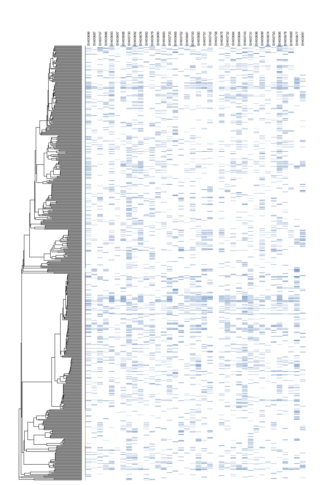
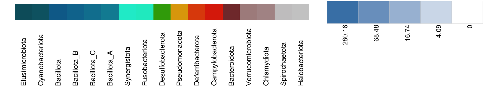

Chapter 5 Count data
This workflow transforms and visualises the quantitative information of the MAGs generated through the EHI pipeline. Note the workflow relies on previous scripts, so make sure you go through the general pipeline before starting working on this document.
5.1 Minimum coverage filtering
Mapping of sequencing reads against the reference genome catalogue is not perfect, and in consequence, all MAGs tend to get a few reads assigned. Implementing a minimum genome coverage filter aims at minimising artificial inflation of diversity due to this artefact of genome-resolved metagenomic analysis. The EHI pipeline implements a default coverage threshold of 0.3 (%30) of a genome. However, if the sequencing depth is low and uneven across samples, this filtering can also introduce distortion, by introducing false positives.
5.2 Genome size normalisation
Bacterial genomes can vary between 1 and 8 MB, which make relative representation of each genome dependent on its size. To account for genome size biases, read-counts can be normalised by applying a normalisation factor that modifies the read numbers according to the size of each genome compared to the average genome size in the dataset.
5.3 Count table
Once low-coverage genome counts have been filtered out, and the read counts have been normalised into genome counts, we can visualise the relative MAG abundances per sample. Note that the script shown below generates a count table in which the scale is log-transformed.
***************************************************************
* Note: *
* force.ultrametric does not include a formal method to *
* ultrametricize a tree & should only be used to coerce *
* a phylogeny that fails is.ultramtric due to rounding -- *
* not as a substitute for formal rate-smoothing methods. *
***************************************************************#Add phylum colors
vertical_tree <- gheatmap(vertical_tree, heatmap, offset=0, width=0.1, colnames=FALSE) +
scale_fill_manual(values=colors_alphabetic)
#Reset fill scale
vertical_tree <- vertical_tree + new_scale_fill()
#Add counts
vertical_tree <- gheatmap(vertical_tree, log10(count_table_cov_size), offset=0.04, width=3.5, colnames=TRUE, colnames_angle=90, font.size=2, colnames_position="top", colnames_offset_y = 9) +
vexpand(.08) +
coord_cartesian(clip = "off") +
scale_fill_gradient(low = "white", high = "steelblue", na.value="white")
#Plot tree
vertical_tree +
theme(legend.position='none')
We can then plot a legend for the count data.
#Add count scale
countscale <- seq(log(max(count_table_cov_size)), 0, length.out = 5)
count_legend <- data.frame(value = countscale, x = c(round(exp(countscale[1]),2),round(exp(countscale[2]),2),round(exp(countscale[3]),2),round(exp(countscale[4]),2),"0")) %>%
mutate(x = factor(x, levels = x)) %>%
ggplot(., aes(x = x, y = 0.2)) +
geom_tile(aes(fill = value, y = 0.2), color="#CCCCCC") +
scale_fill_gradient(low = "white", high = "steelblue", na.value="white") +
theme_void() +
theme(legend.position='none',
axis.text.x = element_text(angle = 90, vjust = 1, hjust=1, size=8))
#Arrange both legends
grid.arrange(grobs = list(phyla_legend,count_legend), layout_matrix = rbind(c(1,1,2),c(1,1,3)))